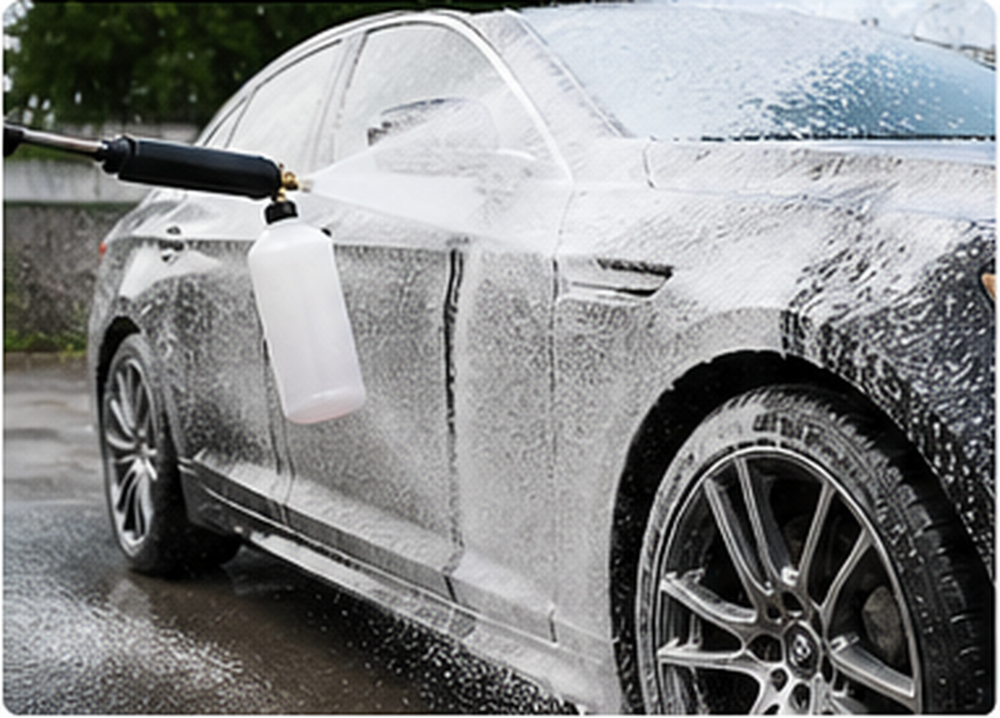
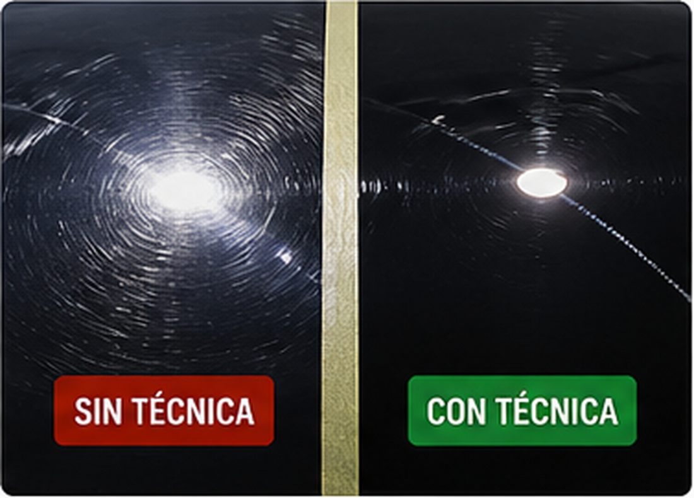
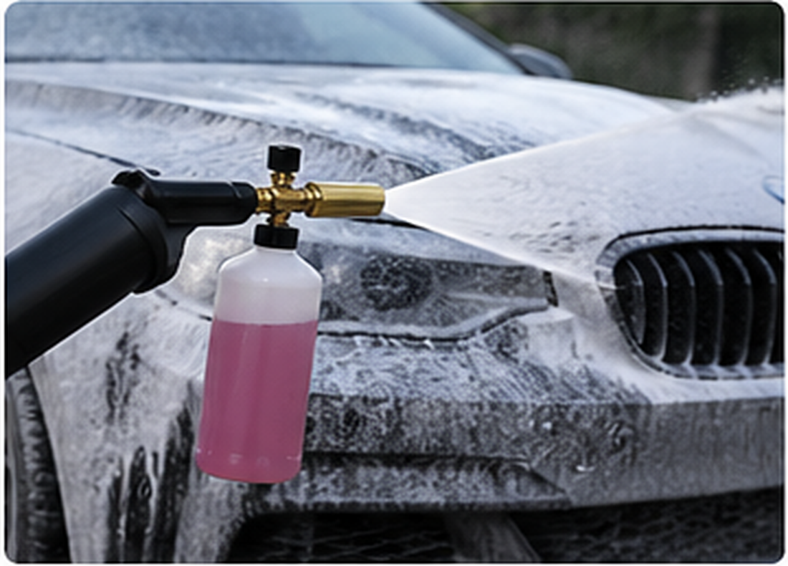
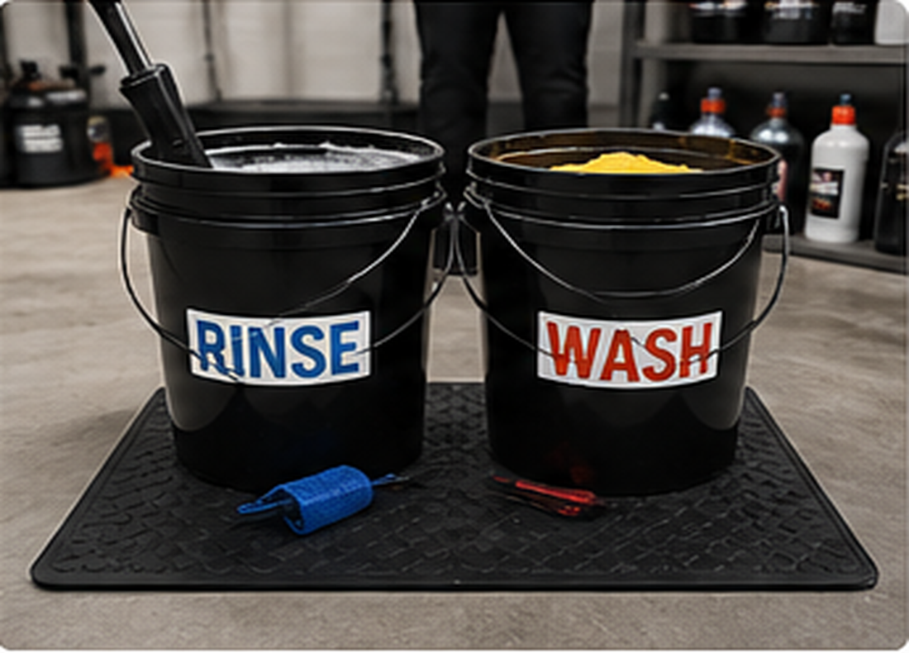
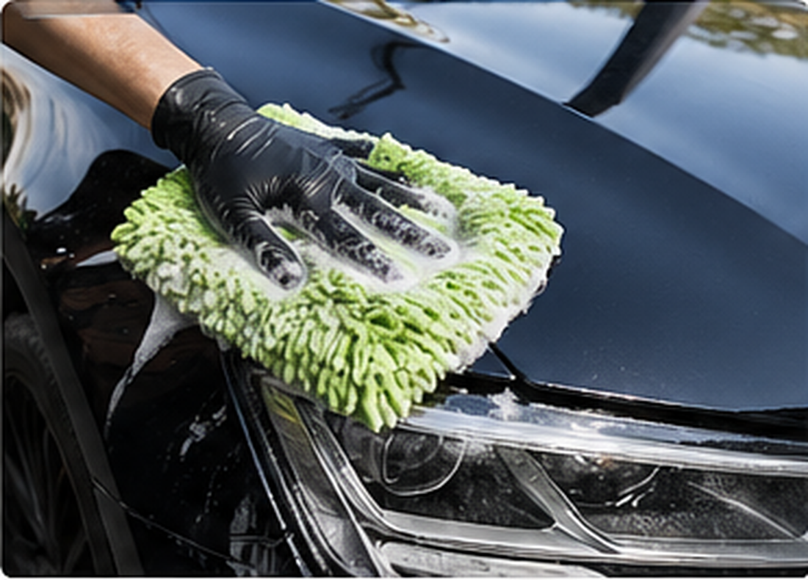
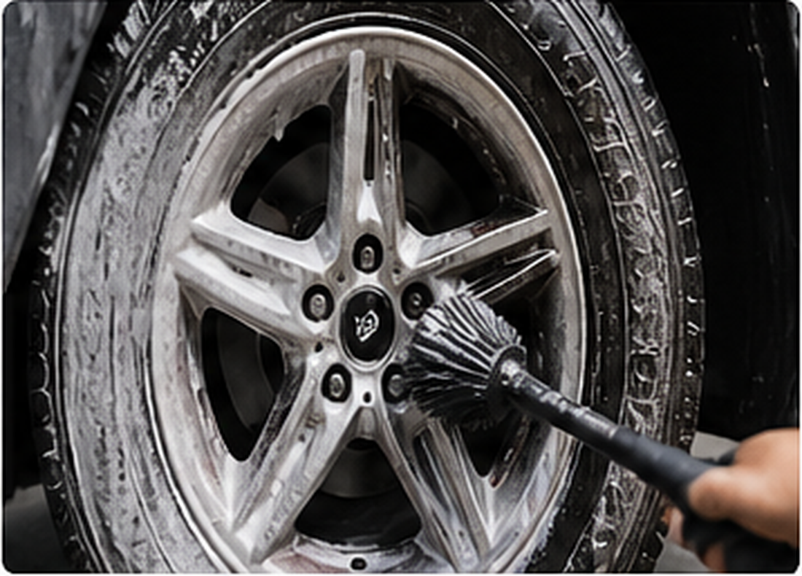
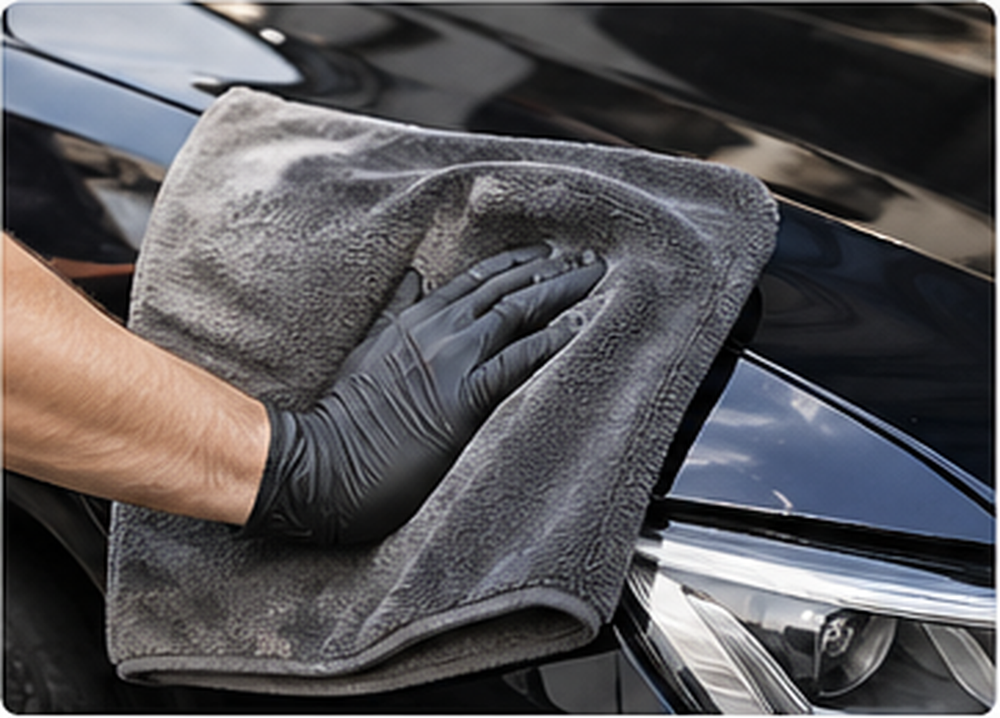
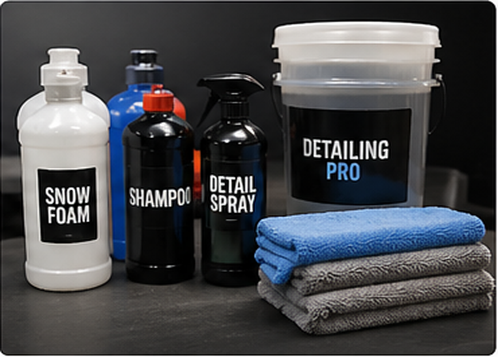

El lavado técnico de un auto no consiste únicamente en aplicar agua, jabón y secar la carrocería. Desde el punto de vista del detailing, lavar correctamente significa retirar suciedad de manera controlada, reducir fricción sobre la pintura, evitar contaminación cruzada y conservar el brillo original del barniz. Muchos rayones finos, marcas circulares y swirls no aparecen por accidentes graves, sino por lavados incorrectos repetidos durante meses o años.
En esta guía se explica cómo lavar un auto correctamente sin rayar la pintura, por qué el prelavado con espuma es importante, cómo aplicar la técnica de dos baldes, qué función cumple el guante de microfibra, cómo secar el vehículo sin generar marcas y qué productos de lavado técnico conviene utilizar. También se desarrolla la limpieza de llantas, el uso correcto del shampoo automotriz y la diferencia entre un lavado rápido y un lavado de autos con criterio profesional.

Contenido del artículo
- Capítulo 1: Qué es un lavado técnico de auto
- Capítulo 2: Por qué se raya la pintura al lavar
- Capítulo 3: Prelavado con espuma y descontaminación inicial
- Capítulo 4: Técnica de dos baldes
- Capítulo 5: Guante de microfibra y contacto seguro
- Capítulo 6: Limpieza de llantas, neumáticos y zonas bajas
- Capítulo 7: Secado con toalla de microfibra
- Capítulo 8: Productos, mantenimiento y conclusión técnica
Capítulo 1: Qué es un Lavado Técnico de Auto
Un lavado técnico de auto es un procedimiento de limpieza exterior diseñado para proteger la superficie, no solo para retirar suciedad visible. A diferencia de un lavado rápido, el lavado técnico considera la naturaleza de la contaminación, el estado de la pintura, el tipo de shampoo automotriz, la presión del agua, el orden de trabajo, la lubricación durante el contacto y el método de secado.
El objetivo principal es evitar que partículas abrasivas como polvo, arena, barro seco, residuos de carretera y contaminación ambiental sean arrastradas sobre la pintura. Cada partícula dura atrapada entre una esponja común y el barniz puede comportarse como una lija microscópica. Por eso, el método importa tanto como el producto.
Cuando alguien busca cómo lavar un auto correctamente, muchas respuestas se concentran en qué jabón usar. Sin embargo, la técnica es igual o más importante. Un shampoo de buena calidad puede fallar si se usa con una esponja contaminada, un balde sucio o una toalla áspera. En detailing, el lavado correcto empieza antes de tocar la pintura.
Capítulo 2: Por qué se Raya la Pintura al Lavar
Los rayones finos y swirls suelen aparecer por contacto incorrecto durante el lavado o secado. Los swirls son marcas circulares visibles bajo luz directa, especialmente en colores oscuros. Se producen cuando pequeñas partículas abrasivas se mueven sobre el barniz en patrones repetidos. Aunque cada marca puede ser muy superficial, el conjunto reduce brillo, profundidad y nitidez del reflejo.
El error más común es lavar el vehículo directamente con una esponja o trapo sin remover primero la suciedad suelta. Otro error frecuente es usar el mismo paño para llantas y carrocería, secar con toallas de baño, lavar bajo sol intenso o utilizar detergentes domésticos que eliminan protección y reducen lubricación.
Swirls: daño acumulativo por mala técnica
Una pintura puede verse limpia después de un lavado incorrecto, pero haber recibido microdaños. Con el tiempo, esos microarañazos se acumulan y la pintura empieza a verse opaca. Esto explica por qué un auto puede perder brillo aunque se lave con frecuencia.
La diferencia entre lavar con técnica y lavar sin técnica no siempre se nota el primer día. Se observa después de muchos lavados, cuando una superficie mantiene reflejos definidos mientras otra presenta marcas circulares bajo luz solar o lámpara de inspección.

Capítulo 3: Prelavado con Espuma y Descontaminación Inicial
El prelavado con espuma es una de las etapas más importantes del lavado técnico. Su función es ablandar y encapsular suciedad antes del contacto manual. La espuma no reemplaza por completo el lavado con guante, pero reduce la cantidad de partículas adheridas sobre la pintura y disminuye el riesgo de arrastrarlas.
Para aplicar espuma se puede usar una foam cannon conectada a hidrolavadora o un pulverizador espumante. Lo importante es utilizar un producto adecuado para prelavado automotriz, dejar actuar el tiempo necesario sin que se seque sobre la superficie y enjuagar desde arriba hacia abajo. En vehículos muy sucios, esta etapa puede marcar la diferencia entre un lavado seguro y un lavado agresivo.
Por qué el prelavado reduce el riesgo de rayas
La espuma ayuda a separar polvo, tierra ligera, residuos orgánicos y suciedad de carretera. Al enjuagar, parte de esa contaminación cae sin necesidad de contacto físico. Esto permite que el guante de microfibra trabaje después sobre una superficie menos cargada de partículas.
El prelavado es especialmente útil en zonas bajas, parachoques, faldones, parte trasera y guardabarros, donde se acumula más contaminación. Si se omite esta etapa, el guante recibirá demasiada carga abrasiva desde el primer contacto.

Capítulo 4: Técnica de Dos Baldes
La técnica de dos baldes es uno de los métodos más conocidos para reducir contaminación cruzada durante el lavado de autos. Consiste en utilizar un balde con shampoo automotriz y otro balde con agua limpia para enjuagar el guante. La idea es evitar que la suciedad retirada de la carrocería vuelva al balde de shampoo.
Cómo aplicar la técnica correctamente
El procedimiento es simple: se carga el guante con shampoo, se lava una sección del auto con movimientos rectos y suaves, luego se enjuaga el guante en el balde de agua limpia, se escurre y recién después se vuelve al balde con shampoo. Si se dispone de rejillas separadoras de suciedad, el método mejora porque las partículas pesadas quedan en el fondo del balde.
Esta técnica funciona mejor si se lava de arriba hacia abajo. Techo, cristales, capó y zonas superiores suelen estar menos contaminadas que taloneras, parachoques y partes bajas. Dejar las zonas más sucias para el final reduce la posibilidad de transferir partículas agresivas a paneles delicados.

Capítulo 5: Guante de Microfibra y Contacto Seguro
El guante de microfibra es una herramienta clave en el lavado técnico. A diferencia de una esponja plana, sus fibras pueden atrapar partículas dentro del tejido y alejarlas ligeramente de la superficie. Esto reduce el riesgo de que la suciedad se arrastre directamente contra el barniz.
El contacto debe ser suave. No se debe presionar con fuerza para “sacar brillo” durante el lavado. El brillo se protege evitando daño, no frotando más fuerte. Si una mancha no sale con una pasada ligera, se debe tratar con un producto específico, no insistir con fricción agresiva.
Movimientos rectos y secciones pequeñas
Lavar por secciones permite controlar mejor la suciedad y evitar que el shampoo se seque. Los movimientos rectos son preferibles a movimientos circulares porque, si aparece una marca, será menos visible y más fácil de corregir que un swirl circular.
También conviene usar más de un guante si el vehículo está muy sucio: uno para zonas superiores y otro para zonas bajas. Las llantas, pasos de rueda y neumáticos deben tener herramientas separadas.

Capítulo 6: Limpieza de Llantas, Neumáticos y Zonas Bajas
Las llantas son una de las zonas más contaminadas del vehículo. Acumulan polvo de freno, partículas metálicas, grasa, barro, alquitrán y suciedad de carretera. Por eso, en un lavado técnico se recomienda trabajar las llantas antes de lavar la pintura o utilizar herramientas completamente separadas.
Por qué las llantas no deben contaminar la pintura
El polvo de freno puede contener partículas abrasivas y contaminantes ferrosos. Si una brocha, guante o toalla usada en llantas toca después la pintura, puede transferir suciedad agresiva al barniz. Esta es una causa común de rayones evitables.
Para limpiar llantas se pueden usar cepillos específicos, brochas, limpiador de llantas y desengrasante seguro según el acabado. Las llantas pintadas, diamantadas, cromadas o mate no siempre toleran el mismo químico, por lo que conviene elegir productos compatibles.

Capítulo 7: Secado con Toalla de Microfibra
El secado es una de las etapas donde más marcas se generan. Muchas personas lavan correctamente y luego dañan la pintura al secar con toallas ásperas, trapos viejos, camisetas o paños contaminados. Una toalla de microfibra de secado debe tener alta absorción, estar limpia y usarse sin presión excesiva.
Secado por apoyo y arrastre mínimo
Lo ideal es retirar la mayor cantidad de agua posible con flujo de aire o enjuague final controlado, y luego usar la toalla apoyándola suavemente sobre la superficie. Si se necesita arrastrar, debe hacerse con mínima presión y sobre una superficie bien lubricada, preferiblemente con ayuda de un drying aid o spray de secado.
El secado bajo sol intenso puede dejar manchas minerales, especialmente si el agua tiene alta dureza. Por eso, trabajar en sombra y por secciones ayuda a evitar marcas de agua.

Capítulo 8: Productos, Mantenimiento y Conclusión Técnica
Los productos de lavado técnico deben seleccionarse según el objetivo. Un shampoo automotriz de pH balanceado ayuda a limpiar sin retirar innecesariamente ceras, selladores o coatings. Un prelavado espumante ayuda a reducir suciedad antes del contacto. Un limpiador de llantas trabaja contaminación más pesada. Un spray de secado puede mejorar lubricación y reducir marcas de agua.
Productos básicos para lavar un auto correctamente
Un kit mínimo de lavado técnico puede incluir shampoo automotriz, foam cannon o pulverizador, dos baldes, rejillas separadoras, guante de microfibra, cepillos para llantas, brochas, toallas de secado y microfibras limpias para detalles finales. No se trata de tener muchos productos, sino de usar cada herramienta en la zona correcta.
También es importante lavar y secar las microfibras adecuadamente. Una toalla contaminada con arena, grasa o residuos químicos puede rayar más que una herramienta barata. En detailing, el mantenimiento de las herramientas forma parte del mantenimiento del vehículo.

8.1 Rutina recomendada de lavado seguro
- Trabajar en sombra: evita que el shampoo o la espuma se sequen sobre la pintura.
- Limpiar llantas primero: reduce contaminación cruzada hacia la carrocería.
- Aplicar prelavado: la espuma ablanda suciedad antes del contacto manual.
- Enjuagar correctamente: retira partículas sueltas de arriba hacia abajo.
- Usar dos baldes: separa shampoo limpio de agua contaminada.
- Lavar con guante de microfibra: movimientos rectos y baja presión.
- Secar con microfibra limpia: alta absorción, sin fricción innecesaria.
- Inspeccionar la pintura: revisar marcas de agua, restos de suciedad o zonas olvidadas.
En conclusión, el lavado técnico no es un lujo ni una exageración. Es la primera línea de defensa de la pintura. Un auto puede tener buen pulido, cera o coating, pero si se lava mal, la superficie se deteriorará rápidamente. La forma correcta de lavar un auto sin rayar la pintura consiste en reducir fricción, controlar la suciedad y usar herramientas limpias en cada etapa.